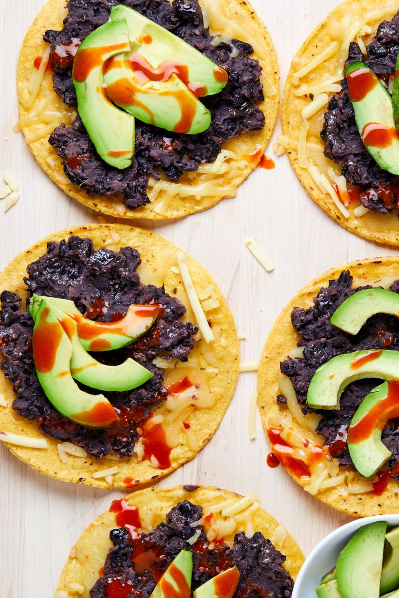
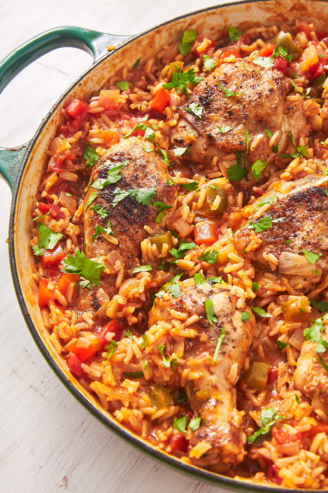
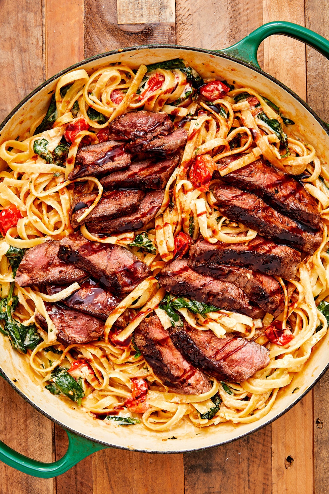

|
|
The bell pepper is an excellent vessel for stuffing meat, rice, and, of course, cheese. It's strong enough to hold its shape in the oven, and the flavor is subtle enough to go well with just about anything. This is our favorite recipe, but the customization options are endless. |  | With only 5 ingredients, these black bean tostadas are the easiest and fastest meal to throw together. You can always include additional toppings like corn salsa, avocado ranch, or endless crunchy veggies like radishes or pickled red onions, but these are also delicious if you keep things simple, like we did here.. |
|  | Want something awesome for dinner but don't want to spend your entire evening cooking and cleaning? Arroz con pollo (chicken with rice in Spanish) is the the perfect recipe. It's an easy one-pot meal that doesn't taste like one, and it tastes even better as leftovers. |  | Whenever we crave steak, this dish is always what we want to make. It comes together quickly and is so full of flavor. It makes us forget chicken fettuccine Alfredo ever existed. If you want the steak without the pasta, may we suggest Cajun butter steak?. |